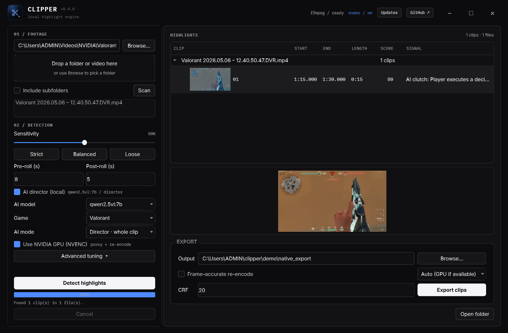

Smart padding + merging
Each detected peak gets 8 seconds before and 5 seconds after. Overlapping or near-adjacent windows merge when the gap is under a second, keeping a continuous fight as one clip instead of six fragments.
Clipper scans a folder, finds the loud reactions and sudden motion, merges nearby moments, and cuts clean clips with FFmpeg. Everything runs on your machine. No accounts, no uploads, no admin prompt.

Recorded from the actual Clipper 0.8.4 desktop app on Windows 11 with the bundled llama.cpp runtime. No mockup, no cloud round-trip.
The demo selects a real Rocket League capture, runs the local AI director, previews the goal, and exports the selected clip with lossless stream copy.
Built for the “I have 40 GB of ShadowPlay clips and want the good 30 seconds” problem.
Each detected peak gets 8 seconds before and 5 seconds after. Overlapping or near-adjacent windows merge when the gap is under a second, keeping a continuous fight as one clip instead of six fragments.
Select a row to see its peak frame immediately. Play, pause, seek, and nudge with the inline player. A single click never starts playback; the controls are always visible.
Exports use stream copy, so the original video and audio are untouched and the cut finishes almost instantly.
When a game is running, Clipper pauses analysis and unloads the local vision model so the game keeps its VRAM. It resumes when you close the game.
A real NVENC test enables GPU acceleration for the analysis proxy. Motion scoring and audio analysis stay on the CPU, where they belong. Threads are capped so your machine stays usable.
A performance preset, not a fake “AI off” mode: 2 threads, a 256 px / 2 fps proxy, and below-normal priority. AI Director still runs.
There is no heuristic-only mode. The director watches the full clip in short windows, transcribes the audio with Whisper, reads HUD/audio signals, and keeps the story beats. Desktop and Omegle-style captures use Social mode instead of game logic. Clipper downloads its own pinned llama.cpp runtime and one model tier on first setup. Ollama is optional, not required.

Browse for a folder or video, or drop a video. Clipper probes duration, resolution, FPS, and audio locally.
The local vision model reviews the full clip with transcript, HUD, and audio signals. Padding and merging turn the story beats into clean clips.
Preview in the app, keep the rows you want, and export selected or all. Lossless stream copy keeps the original quality.
Windows 10/11, per-user install, no admin prompt. The installer is about 380 MiB and includes FFmpeg, Whisper base.en, RapidOCR, YAMNet, and the Qt/Python runtime. The installed app is about 1.05 GB. AI models are not bundled: choose a tier in the app and Clipper downloads the pinned llama.cpp runtime (749 MB) plus the model (2.05-7.56 GB).
Disk after AI setup: about 4.5 GB for Lite, 10.6 GB for Standard with LFM3 ears, or 12.1 GB for Google with LFM3 ears. Leave extra space for analysis temp files and exports. On NVIDIA, driver 551.61 or newer is recommended; no CUDA Toolkit is needed. Clipper checks live free VRAM before every model start and serializes automatically when games or other apps leave insufficient headroom. CPU-only AI works but is much slower.
Native Windows x64. No Python, FFmpeg, admin, or Ollama install.
Yes. Analysis, OCR, transcription, and export run on your machine. Clipper does not upload footage. Network access is limited to the optional GitHub update check, the AI runtime/model downloads when you click them, and the local server URL you configure. The app has no accounts and no telemetry.
No. Clipper uses a bundled llama.cpp runtime and one of three model tiers. Whisper, HUD OCR, and YAMNet ship with the app. Select Lite, Standard, or Google in the AI model picker and click Download. Ollama is optional, not required.
Each detected peak gets 8 seconds before and 5 seconds after. If two candidates overlap or are less than a second apart, they merge into one window and keep the stronger peak. That keeps a fight, a goal replay, or a reaction as one coherent clip instead of several fragments.
It is a performance preset: 2 CPU threads, a 256 px / 2 fps analysis proxy, and below-normal process priority. It also forces one AI model at a time. Clipper checks live free GPU memory before every model start and serializes automatically when games or other apps leave insufficient headroom, even when Low-power mode is off. Low-power mode additionally lowers threads and proxy resolution.
Open the AI model dropdown and choose Lite, Standard, or Google. Click Download. Clipper installs the pinned llama.cpp runtime first (749 MB download, about 1.41 GB installed), then the selected model: Lite 2.05 GB, Standard 6.12 GB, or Google 7.56 GB. Downloads are SHA-256 verified and resume when possible. Runtime and models live in %LOCALAPPDATA%\Clipper and survive app upgrades. No admin prompt is needed.
Ollama is optional. The normal picker does not require or list Ollama models. It remains an alternative backend for the CLI and existing configurations, and for models that need Ollama-specific audio support. The default setup uses the bundled llama.cpp runtime and an explicitly connected local OpenAI-compatible server if you choose one.
Yes for Lite. Lite targets about 4 GB of VRAM and measured about 2.9 GiB above idle on an RTX 3080. Standard targets about 8.5 GB, and Google about 10.5 GB. On a 6 GB card, use Lite and close other GPU-heavy apps. On a 10 GB card, Standard vision fits with room to spare; Google is tight. Running LFM3 audio ears beside a different vision model adds about 2.9 GiB. Clipper checks live free memory, not just total capacity, and serializes the two models when games or other apps leave insufficient headroom. Low-power mode also lowers threads and proxy resolution.
Check internet, VPN/proxy, firewall, and free disk. Partial files resume, and runtime/model files are SHA-256 verified. If a model will not start, check %LOCALAPPDATA%\Clipper\ai-models\<model-id>\server.log, update the NVIDIA driver to 551.61 or newer, close GPU-heavy apps, and try Lite or Low-power mode. If the error says insufficient free VRAM, close GPU apps or turn off Audio ears before retrying.
It ships with a large title map, detects Unreal Engine shipping processes, and recognizes games installed through Steam, Epic, GOG, Riot, EA, Ubisoft, and Xbox paths. If a title is missed, you can add it to %LOCALAPPDATA%\Clipper\games.json.
Yes. Clipper is MIT licensed and the Windows build is free. There is no paid clip service or cloud tier.